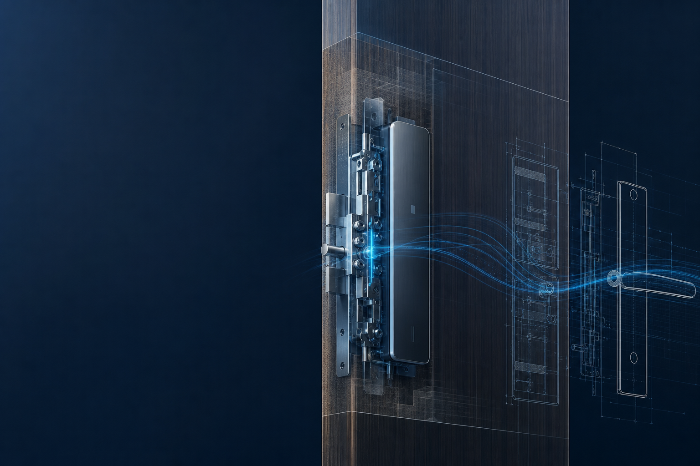
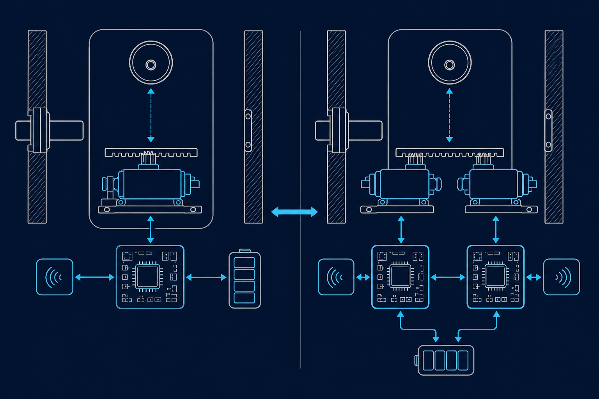
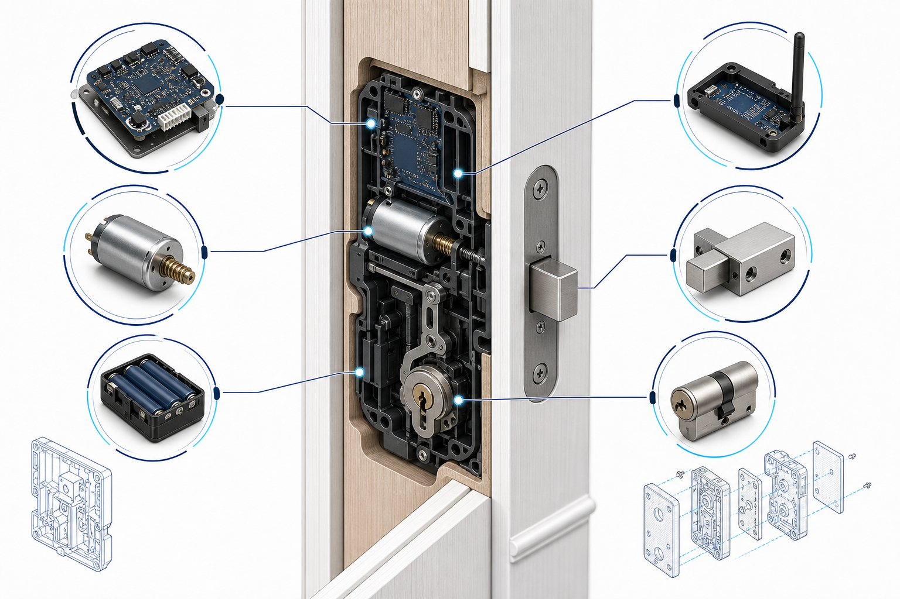
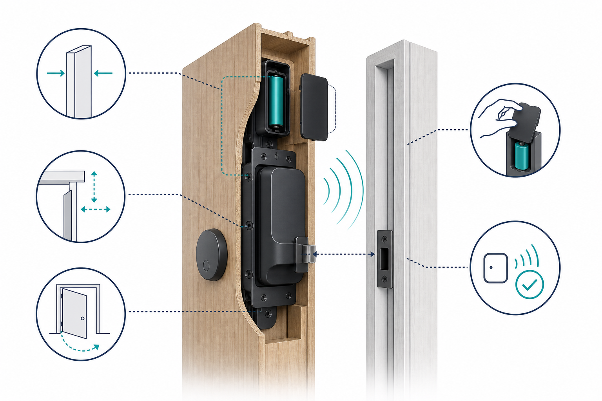
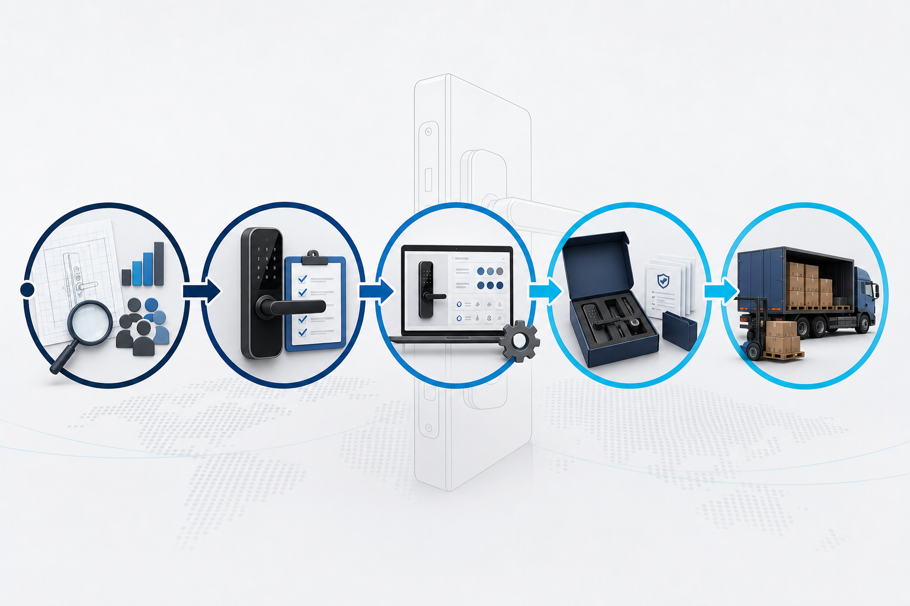

Este artigo destina-se a equipas de aprovisionamento de engenharia, marcas de canal e projetos OEM/ODM. As especificações apoiam as discussões técnicas iniciais; a compatibilidade com a porta, o âmbito das certificações, os módulos opcionais e os prazos de entrega devem ser confirmados através da aprovação da amostra e de orçamento formal.
O valor de uma fechadura invisível vai além de «ocultar a fechadura». Para os compradores de projetos, as primeiras respostas necessárias são: condições da porta, redundância necessária e configuração de entrega. A WF-019 adequa-se a projetos que precisam de uma solução simples de controlo remoto; a WF-026 destina-se a aplicações que exigem um design de sistema duplo com motor duplo, cilindro de grau C e múltiplos métodos de desbloqueio. Este guia fornece um método de seleção de engenharia que pode incluir num pedido de cotação.

Defina o posicionamento do projeto antes de contar funcionalidades
Ambos os produtos seguem a abordagem da fechadura invisível com controlo remoto, mas os seus objetivos de conceção diferem. A WF-019 utiliza 2 pilhas AA e controlo remoto de 433 MHz, com alcance nominal de 10 metros. É indicada para SKUs residenciais, de apartamentos e de canais que privilegiam menor complexidade de implementação, instalação oculta e controlo remoto básico. Se o projeto necessitar de impressão digital, PIN, NFC, aplicação, Bluetooth ou Wi-Fi, trate-os como módulos opcionais na fase do pedido de cotação — e não como configuração padrão.
A WF-026 utiliza uma arquitetura de sistema duplo com motor duplo, cilindro de grau C, 4 pilhas AA mais 3 pilhas AAA e alcance de controlo remoto de 433 MHz de 20 metros. É adequada a projetos com requisitos claros de redundância, estrutura de segurança e desbloqueio multimétodo. A seleção não consiste em «quanto mais complexo, melhor» — consiste em adequar as capacidades da fechadura ao cenário-alvo e à capacidade pós-venda.

Diferenças de engenharia: sistema simples vs. sistema duplo com motor duplo
WF-019: tornar uma solução invisível básica fácil de implementar
Quando o projeto se concentra na instalação oculta, operação remota e estrutura de produto clara, a WF-019 oferece um caminho mais direto. As equipas de engenharia devem dar prioridade ao espaço disponível no interior da porta, à fixação da placa de montagem, à quantidade de comandos a entregar e ao processo de manutenção das pilhas. Para canais de retalho ou unidades múltiplas, normalizar estes elementos básicos costuma reduzir mais o custo de comunicação posterior do que acrescentar funcionalidades não validadas.
WF-026: reservar margem para maior redundância e segurança
O design de sistema duplo com motor duplo é adequado quando a disponibilidade contínua e a estrutura de segurança têm maior prioridade. Os documentos de aprovisionamento devem especificar os métodos de desbloqueio exigidos, os requisitos do cilindro, os métodos de entrada de reserva e a responsabilidade pela substituição das pilhas. Inclua-os nos critérios de aceitação da amostra para que a «redundância» se torne uma condição de entrega verificável — e não apenas uma alegação do produto.

Verificações de tipo de porta, instalação e alimentação
As fechaduras invisíveis são montadas no interior da porta, pelo que a análise da instalação não pode limitar-se ao aspeto. Antes da amostragem, forneça a espessura da porta, as dimensões da cavidade, a folga da ombreira, o material da porta, o sentido de abertura e a posição do trinco. Em projetos de adaptação, confirme também se é permitida fresagem, os pontos de carga da placa de montagem e o acesso posterior ao compartimento das pilhas.
- Condições mecânicas: forneça desenhos ou fotografias da porta; confirme o risco de interferência entre o corpo da fechadura, a placa de montagem e o trinco.
- Condições sem fios: valide a resposta do comando no material e à distância reais da porta; portas metálicas ou divisórias complexas exigem primeiro testes com amostras.
- Condições de manutenção: defina ciclos de verificação das pilhas, avisos de bateria fraca e procedimentos de emergência para a equipa do local.
- Condições de exportação: alinhe a certificação, as etiquetas da embalagem e os idiomas do manual com o mercado-alvo e a versão de produto confirmada.

Quatro perguntas de aprovisionamento para uma seleção rápida
1. O projeto exige explicitamente sistema duplo com motor duplo e cilindro de grau C?
Se o caderno de requisitos ou o caso de utilização exigir maior redundância estrutural e configuração de cilindro, dê prioridade à WF-026. Se o objetivo for um controlo remoto invisível básico e fiável, comece pela validação da amostra da WF-019.
2. Que métodos de desbloqueio são necessários — e são padrão ou opcionais?
Não considere «suportado» como uma decisão de compra. Confirme a versão, o âmbito de entrega e o método de ensaio para controlo remoto, impressão digital, PIN, NFC e aplicação, item a item. Especialmente para a WF-019, os métodos de desbloqueio expandidos devem ser indicados como módulos opcionais.
3. O alcance do comando foi validado no tipo de porta e local reais?
Os alcances nominais de 433 MHz — 10 m para a WF-019 e 20 m para a WF-026 — são pontos de partida para a seleção. O alcance efetivo continua a depender do material da porta, das divisórias e das interferências no local. Conclua os testes de amostra na porta-alvo antes de encomendas em volume.
4. A equipa do projeto consegue assumir o processo de manutenção correspondente?
Mais funcionalidades e complexidade exigem instruções mais claras de instalação, aceitação e pós-venda. Defina os responsáveis por pilhas, comandos, desbloqueio de emergência e comunicação de falhas na lista de verificação de entrega do projeto, para evitar lacunas de responsabilidade posteriores.
Lista de verificação da entrega de projetos OEM/ODM
Para proprietários de marcas, selecionar um modelo é apenas o início. Alinhe os seguintes pontos com o orçamento, as amostras e os documentos de produção em massa:
- Mercado-alvo, canal de vendas e volume de expedição previsto;
- Dados da porta, método de instalação e plano de testes de amostra no local;
- Lista clara de configuração padrão vs. módulos opcionais;
- Critérios de aceitação para alcance do comando, métodos de desbloqueio, pilhas e operação de emergência;
- Certificação, embalagem, idioma do manual, marcas da marca e materiais pós-venda.

Pronto para selecionar uma solução de fechadura invisível para o seu projeto?
Partilhe com a WAFU o tipo de porta, o mercado e os métodos de desbloqueio necessários. Ajudaremos a confirmar uma via de validação de amostras para a WF-019, a WF-026 ou uma configuração OEM/ODM personalizada.
Ver fechaduras invisíveis com controlo remotoSolicitar consultoria de projeto